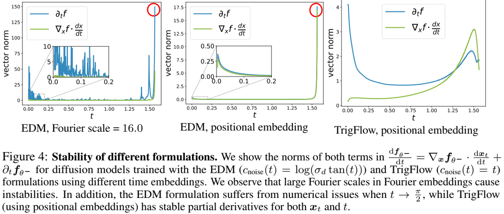
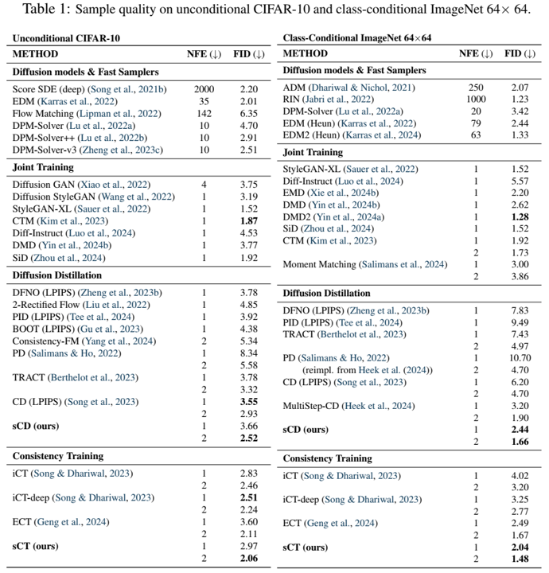
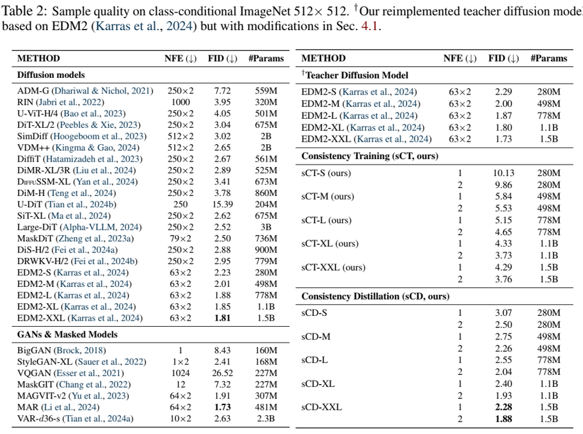

摘要
一致性模型（CMs）是一类强大的基于扩散的生成模型，针对快速采样进行了优化。大多数现有的CMs都是使用离散化时间步长 训练的，这会引入额外的超参数，并且容易出现离散化误差 。虽然连续时间公式 可以缓解这些问题，但它们的成功受到训练不稳定性 的限制。为了解决这个问题，我们提出了一个简化的理论框架，该框架将之前扩散模型和CMs的参数化统一 起来，确定了不稳定的根本原因。基于这一分析，我们介绍了扩散过程参数化、网络架构和训练目标 方面的关键改进。这些变化使我们能够以前所未有的规模训练连续时间CMs，在ImageNet 512×512上达到1.5B参数。我们提出的训练算法仅使用两个采样步骤 ，在CIFAR-10上实现了2.06的FID得分，在ImageNet 64×64上实现了1.48的FID分数，在ImageNet 512×512上实现了1.88的FIDs分数，将FID分数与现有最佳扩散模型的差距缩小到10%以内。论文地址
引言
扩散模型（Sohl-Dickstein等人，2015 ；Song&Ermon，2019 ；Ho等人，2020 ；Song等人，2021b ）彻底改变了生成性人工智能，在图像（Rombach等人，2022 ；Ramesh等人，2022 ；Ho等人，2022 ）、3D（Poole等人，2022 ；Wang等人，2024 ；Liu等人，2023b ）、音频（Liu等人，2033a ；Evans等，2024 ）和视频生成（Blattmann等人，2023 ；Brooks等人，2024 ）方面取得了显著成果。尽管它们取得了成功，但一个显著的缺点是采样速度慢 ，通常需要几十到几百个步骤来生成一个样本。已经提出了各种扩散蒸馏技术，包括直接蒸馏（Luhman&Luhman，2021 ；Zheng等人，2023b ）、对抗蒸馏（Wang等人，2022 ；Sauer等人，2023 ）、渐进蒸馏（Salimans&Ho，2022 ）和变分蒸馏（VSD）（Wang等人，2024 ；Yin等人，2024b ；2024a ；Luo等人，2024 ；Xie等，2024a ；Salimans等人，2024b ）。然而，这些方法也面临着挑战：由于需要大量的扩散模型样品，直接蒸馏会产生大量的计算成本 ；对抗性蒸馏引入了与GAN训练相关的复杂性 ；渐进蒸馏需要多个训练阶段 ，对于一步或两步生成效果较差 ；VSD可以产生过于平滑的样本，其多样性有限 ，在高引导水平下难以实现。
一致性模型（CMs）（Song等人，2023 ；Song&Dhariwal，2023 ）在解决这些问题方面具有显著优势。它们消除了对扩散模型样本进行监督的需要 ，避免了生成合成数据集的计算成本。CMs还绕过了对抗性训练 ，避开了其固有的困难。除了蒸馏，CMs还可以通过一致性训练 （CT）从头开始训练，而不依赖于预先训练的扩散模型。之前的工作（Song&Dhariwal，2023 ；Geng等人，2024 ；Luo等人，2023 ；Xie等人，2024a ）已经证明了CMs在几步生成中的有效性，特别是在一两步生成中。然而，这些结果都是基于离散时间CMs的，这会引入离散误差，需要仔细调度时间步长网格，从而可能导致样本质量欠佳。相比之下，连续时间CMs避免了这些问题，但面临着训练不稳定的挑战（Song等人，2023 ；Song&Dhariwal，2023 ；Geng等人，2024 ）。
在这项工作中，我们介绍了简化、稳定和扩大连续时间CM训练的技术。我们的第一个贡献是TrigFlow ，这是一种新的公式，将EDM（Karras等人，2022 ；2024 ）和流匹配（Peluchetti，2022 ；Lipman等人，2022 ）统一起来，大大简化了扩散模型、相关概率流ODE和CMs的公式。在此基础上，我们分析了CM训练中不稳定的根本原因，并提出了一个完整的缓解方案。我们的方法包括在网络架构中改进时间条件和自适应组归一化 (adaptive group normalization)。此外，我们重新制定了连续时间CM的训练目标，结合了关键项的自适应加权和归一化，以及渐进退火 ，以实现稳定和可扩展的训练。
通过这些改进，我们提高了一致性模型在一致性训练和蒸馏中的性能，与之前的离散时间公式相比，取得了相当或更好的结果。我们的模型被称为sCMs，在各种数据集和模型大小上都取得了成功。我们在CIFAR-10、ImageNet 64×64和ImageNet 512×512上训练sCMs，达到了前所未有的规模，有15亿个参数——这是迄今为止训练的最大CM（图2中的样本）。我们证明，sCMs可以随着计算量的增加而有效地扩展 ，从而以可预测的方式获得更好的样本质量。此外，当与需要更多采样计算的最先进的扩散模型进行比较时，sCM使用两步生成将FID差距缩小到10%以内。此外，我们还证明，当相邻时间步之间的差距缩小到接近连续时间极限时，样本质量就会提高 ，从而为连续时间 CMs 相对于离散时间变体的优势提供了严谨的理由。此外，我们研究了sCMs和VSD之间的差异，发现sCMs产生的样本更加多样化，与引导更兼容 ，而VSD往往在更高的指导水平上挣扎。
预备知识
扩散模型
给定一个训练数据集，让 p d p_d p d σ d \sigma_d σ d x 0 ∼ p d x_0\sim p_d x 0 ∼ p d x t = α t x 0 + σ t z t x_t = \alpha_t x_0 + \sigma_t z_t x t = α t x 0 + σ t z t z t ∼ N ( 0 , I ) z_t \sim \mathcal{N}(0,I) z t ∼ N ( 0 , I ) t ∈ [ 0 , t ] t\in[0,t] t ∈ [ 0 , t ]
我们考虑了扩散模型的两个最新公式。
EDM （Karras等人，2022 ；2024 ）。加噪过程简单地设置 α t = 1 α_t = 1 α t = 1 σ t = t \sigma_t = t σ t = t E x 0 , z , t [ w ( t ) ∣ ∣ f θ ( x t , t ) − x 0 ∣ ∣ 2 2 ] E_{x_0,z,t}[\mathcal{w}(t)||f_{\theta}(x_t,t) - x_0||_2^2] E x 0 , z , t [ w ( t ) ∣∣ f θ ( x t , t ) − x 0 ∣ ∣ 2 2 ] w ( t ) \mathcal{w}(t) w ( t ) f θ ( x t , t ) = c s k i p ( t ) x t + c o u t ( t ) F θ ( c i n ( t ) x t , c n o i s e ( t ) ) f_{\theta}(x_t,t) = c_{skip}(t)x_t + c_{out}(t)\mathcal{F}_{\theta}(c_{in}(t)x_t,c_{noise}(t)) f θ ( x t , t ) = c s ki p ( t ) x t + c o u t ( t ) F θ ( c in ( t ) x t , c n o i se ( t )) F θ \mathcal{F}_{\theta} F θ c s k i p c_{skip} c s ki p c o u t c_{out} c o u t c i n c_{in} c in Song等人，2021b ），由 d x t d t = [ x t − f θ ( x t , t ) ] / t \frac{dx_t}{dt} = [x_t - f_{\theta}(x_t,t)]/t d t d x t = [ x t − f θ ( x t , t )] / t x t ∼ N ( 0 , T 2 I ) x_t\sim\mathcal{N}(0,T^2I) x t ∼ N ( 0 , T 2 I ) x 0 x_0 x 0
流匹配 。加噪过程使用可微系数 α t \alpha_t α t σ t \sigma_t σ t α t ′ \alpha_t^{'} α t ′ σ t ′ \sigma_t^{'} σ t ′ α t ′ = 1 − t \alpha_t^{'} =1−t α t ′ = 1 − t σ t ′ = t \sigma_t^{'}=t σ t ′ = t E x 0 , z , t [ ( w ( t ) ∣ ∣ F θ ( x t , t ) − ( α t ′ + σ t ′ z ) ∣ ∣ 2 2 ] E_{x_0,z,t}[(\mathcal{w}(t)||\mathrm{F}_{\theta}(x_t,t) - (\alpha_t^{'} + \sigma_t^{'}z)||_2^2] E x 0 , z , t [( w ( t ) ∣∣ F θ ( x t , t ) − ( α t ′ + σ t ′ z ) ∣ ∣ 2 2 ] w ( t ) \mathcal{w}(t) w ( t ) F θ F_{\theta} F θ x 1 ∼ N ( 0 , I ) x_1\sim\mathcal{N}(0,I) x 1 ∼ N ( 0 , I ) d x t d t = F θ ( x t , t ) \frac{dx_t}{dt} = \mathcal{F}_{\theta}(x_t,t) d t d x t = F θ ( x t , t )
一致性模型
一致性模型（CMs）（Song等人，2023 ；Song&Dhariwal，2023 ）是一种神经网络 f θ ( x t , t ) \mathcal{f}_{\theta}(x_t,t) f θ ( x t , t ) x t x_t x t x t x_t x t x 0 x_0 x 0 f θ f_{\theta} f θ f θ ( x , 0 ) ≡ x f_{\theta}(x,0) \equiv x f θ ( x , 0 ) ≡ x f θ ( x t , t ) = c s k i p ( t ) x t + c o u t ( t ) F θ ( c i n ( t ) x t , c n o i s e ( t ) ) f_{\theta}(x_t,t) = c_{skip}(t)x_t + c_{out}(t)\mathrm{F}_{\theta}(c_{in}(t)x_t,c_{noise}(t)) f θ ( x t , t ) = c s ki p ( t ) x t + c o u t ( t ) F θ ( c in ( t ) x t , c n o i se ( t )) c s k i p ( 0 ) = 1 c_{skip}(0) = 1 c s ki p ( 0 ) = 1 c o u t ( 0 ) = 0 c_{out}(0) = 0 c o u t ( 0 ) = 0 在相邻的时间步上具有一致的输出 。根据如何选择附近的时间步长 ，有两类一致性模型，如下所述。
离散时间CMs 。训练目标在两个相邻的有限距离时间步上定义：
E x t , t [ w ( t ) d ( f θ ( x t , t ) , f θ − ( x t − △ t , t − △ t ) ) ] , (1) E_{x_t, t}[\mathcal{w}(t)d(\mathcal{f}_{\theta}(x_t,t), \mathcal{f}_{\theta^{-}}(x_{t-\triangle\mathrm{t}},t - \triangle\mathrm{t}))]\,, \tag{1}
E x t , t [ w ( t ) d ( f θ ( x t , t ) , f θ − ( x t − △ t , t − △ t ))] , ( 1 )
其中 θ − \theta^− θ − s t o p g r a d ( θ ) \mathcal{stopgrad}(\theta) s t o p g r a d ( θ ) w t w_t w t △ t > 0 \triangle\mathrm{t}\gt\mathrm{0} △ t > 0 d ( ⋅ , ⋅ ) d(\cdot,\cdot) d ( ⋅ , ⋅ ) l 2 \mathcal{l}_2 l 2 d ( x , y ) = ∣ ∣ x − y ∣ ∣ 2 2 d(x,y) = ||x−y||_2^2 d ( x , y ) = ∣∣ x − y ∣ ∣ 2 2 d ( x , y ) = ∣ ∣ x − y ∣ ∣ 2 2 + c 2 − c d(x,y) = \sqrt{||x-y||_2^2 + c^2} -c d ( x , y ) = ∣∣ x − y ∣ ∣ 2 2 + c 2 − c Song&Dhariwal，2023 ），c>0, 以及LPIPS损失（Zhang等人，2018 ）。离散时间CMs对 △ t \triangle\mathrm{t} △ t Song&Dhariwal，2023 ；Geng等人，2024 ）以实现快速收敛。前一时间步长 t − △ t t - \triangle t t − △ t x t − △ t x_{t-\triangle t} x t − △ t △ t \triangle t △ t x t x_t x t
连续时间CMs 。当使用 d ( x , y ) = ∣ ∣ x − y ∣ ∣ 2 2 d(x,y) = ||x - y||_2^2 d ( x , y ) = ∣∣ x − y ∣ ∣ 2 2 △ t → 0 \triangle t \rightarrow 0 △ t → 0 2023 ）表明，方程（1）相对于 θ \theta θ
▽ θ E x t , t [ w ( t ) f θ T ( x t , t ) d f θ − ( x t , t ) d t ] , (2) \triangledown_{\theta}\mathrm{E}_{x_t,t}[\mathcal{w}(t)\mathcal{f}_{\theta}^T(x_t,t)\frac{d\mathcal{f}_{\theta}-(x_t,t)}{dt}]\,, \tag{2}
▽ θ E x t , t [ w ( t ) f θ T ( x t , t ) d t d f θ − ( x t , t ) ] , ( 2 )
其中 d f θ − ( x t , t ) d t = ▽ x t f θ − ( x t , t ) d x t d t + ∂ t f θ − ( x t , t ) \frac{d\mathcal{f}_{\theta^-}(x_t,t)}{dt} = \triangledown_{x_t}\mathcal{f}_{\theta^-}(x_t,t)\frac{dx_t}{dt} + \partial_{t}\mathcal{f}_{\theta^-}(x_t,t) d t d f θ − ( x t , t ) = ▽ x t f θ − ( x t , t ) d t d x t + ∂ t f θ − ( x t , t ) f θ − \mathcal{f}_{\theta^-} f θ − d x t d t \frac{dx_t}{dt} d t d x t ( x t , t ) (x_t,t) ( x t , t ) Song等人，2023 ；Geng等人，2024 ）发现，训练连续时间CMs，甚至具有极小 △ t \triangle t △ t
一致性蒸馏和一致性训练 。离散时间和连续时间CMs都可以使用一致性蒸馏（CD）或一致性训练（CT）进行训练。在一致性蒸馏中，通过从预训练的扩散模型中提取知识来训练CM。该扩散模型提供了PF-ODE，可以直接插入方程（2）中，用于训练连续时间CMs。此外，通过数值求解PF-ODE以从 x t x_t x t x t − △ t x_{t−\triangle t} x t − △ t x t − △ t x_{t-\triangle t} x t − △ t x t − △ t = α t − △ t x 0 + σ t − △ t z x_{t-\triangle t}= \alpha_{t-\triangle_t}x_0 + \sigma_{t-\triangle_t}z x t − △ t = α t − △ t x 0 + σ t − △ t z x t = α t x 0 + σ t z x_t = \alpha_t x_0 + \sigma_t z x t = α t x 0 + σ t z x 0 x_0 x 0 △ t → 0 \triangle t \rightarrow 0 △ t → 0 d x t d t = α t ′ x 0 + σ t ′ z \frac{dx_t}{dt} = \alpha_t^{'}x_0 + \sigma_t^{'}z d t d x t = α t ′ x 0 + σ t ′ z
简化连续时间一致性模型
先前的一致性模型（CMs）采用EDM（Karras等人，2022 ）中的模型参数化和扩散过程公式。具体来说，CMs被参数化为 f θ ( x t , t ) = c s k i p ( t ) x t + c o u t ( t ) F θ ( c i n ( t ) x t , c n o i s e ( t ) ) \mathcal{f}_{\theta}(x_t,t) = c_{skip}(t)x_t + c_{out}(t)\mathrm{F}_{\theta}(c_{in}(t)x_t, c_{noise}(t)) f θ ( x t , t ) = c s ki p ( t ) x t + c o u t ( t ) F θ ( c in ( t ) x t , c n o i se ( t )) F θ \mathrm{F}_{\theta} F θ θ \theta θ c s k i p ( t ) c_{skip}(t) c s ki p ( t ) c o u t ( t ) c_{out}(t) c o u t ( t ) c i n ( t ) c_{in}(t) c in ( t ) c n o i s t ( t ) c_{noist}(t) c n o i s t ( t ) Song等人，2021b ），这意味着x t = x 0 + t z t x_t = x_0 + tz_t x t = x 0 + t z t c s k i p ( t ) = σ d 2 / ( t 2 + σ d 2 ) c_{skip}(t) = \sigma_d^2/(t_2 + \sigma_d^2) c s ki p ( t ) = σ d 2 / ( t 2 + σ d 2 ) c o u t ( t ) = σ d ⋅ t / σ d 2 + t 2 c_{out}(t) = \sigma_d\cdot t/\sqrt{\sigma_d^2 + t^2} c o u t ( t ) = σ d ⋅ t / σ d 2 + t 2 c i n ( t ) = 1 / t 2 + σ d 2 c_{in}(t)= 1/\sqrt{t^2 + \sigma_d^2} c in ( t ) = 1/ t 2 + σ d 2 见Karras等人（2022）附录B.6 ]。尽管这些系数对训练效率很重要，但它们与t和 σ d \sigma_d σ d
为了简化EDM和随后的CMs，我们提出了TrigFlow，这是一种扩散模型的公式，它保持了EDM的特性，但满足 c s k i p ( t ) = c o s ( t ) c_{skip}(t) = \mathcal{cos}(t) c s ki p ( t ) = cos ( t ) c o u t ( t ) = s i n ( t ) c_{out}(t) = \mathcal{sin}(t) c o u t ( t ) = s in ( t ) c i n ( t ) ≡ 1 / σ d c_{in}(t)\equiv 1/\sigma_d c in ( t ) ≡ 1/ σ d Salimans&Ho，2022 ）的特例。它与Albergo和Vanden Eijnden（2023 、；Albergo等人（2023） 、Ma等人（2024） 提出的三角插值法非常相似，但对其进行了修改，以考虑数据分布 p d p_d p d σ d \sigma_d σ d
扩散过程 。给定 x 0 ∼ p d ( x 0 ) x_0\sim p_d(x_0) x 0 ∼ p d ( x 0 ) z ∼ N ( 0 , σ d 2 I ) z\sim\mathcal{N}(0,\sigma_d^2I) z ∼ N ( 0 , σ d 2 I ) t ∈ [ 0 , π 2 ] t\in[0,\frac{\pi}{2}] t ∈ [ 0 , 2 π ] x t = c o s ( t ) x 0 + s i n ( t ) z x_t = \mathcal{cos}(t)x_0 + \mathcal{sin}(t)z x t = cos ( t ) x 0 + s in ( t ) z x π 2 ∼ N ( 0 , σ d 2 I ) x_{\frac{\pi}{2}}\sim\mathcal{N}(0,\sigma_d^2\mathrm{I}) x 2 π ∼ N ( 0 , σ d 2 I )
扩散模型和PF-ODE 。我们将扩散模型参数化为 f θ ( x t , t ) = F ( x t / σ d , c n o i s e ( t ) ) \mathcal{f}_{\theta}(x_t,t) = \mathrm{F}(x_t/\sigma_d,c_{noise}(t)) f θ ( x t , t ) = F ( x t / σ d , c n o i se ( t )) f θ \mathcal{f}_{\theta} f θ θ \theta θ c n o i s e ( t ) c_{noise}(t) c n o i se ( t )
d x t d t = σ d F θ ( x t σ d , c n o i s e ( t ) ) . (3) \frac{d_{x_t}}{dt} = \sigma_d\mathrm{F}_{\theta}(\frac{x_t}{\sigma^d},c_{noise}(t))\,. \tag{3}
d t d x t = σ d F θ ( σ d x t , c n o i se ( t )) . ( 3 )
扩散目标 。在TrigFlow中，训练扩散模型通过最小化
L D i f f ( θ ) = E x 0 , z , t [ ∣ ∣ σ d F θ ( x t σ d , c n o i s e ( t ) ) − v t ∣ ∣ 2 2 ] , (4) \mathcal{L}_{Diff}(\theta) = E_{x_0,z,t}[||\sigma_d\mathrm{F}_{\theta}(\frac{x_t}{\sigma_d},c_{noise}(t)) -v_t||_2^2]\,, \tag{4}
L D i ff ( θ ) = E x 0 , z , t [ ∣∣ σ d F θ ( σ d x t , c n o i se ( t )) − v t ∣ ∣ 2 2 ] , ( 4 )
其中 v t = c o s ( t ) z − s i n ( t ) x 0 v_t = \mathcal{cos}(t)z − \mathcal{sin}(t)x_0 v t = cos ( t ) z − s in ( t ) x 0
一致性模型 。如第2.2节所述，有效的CM必须满足边界条件 f θ ( x , 0 ) ≡ x f_{\theta}(x,0)\equiv x f θ ( x , 0 ) ≡ x
f θ ( x t , t ) = c o s ( t ) x t − s i n ( x ) σ d F θ ( x t σ d , c n o i s e ( t ) ) , (5) \mathcal{f}_{\theta}(x_t,t) = \mathcal{cos}(t)x_t - \mathcal{sin}(x)\sigma_d\mathrm{F}_{\theta}(\frac{x_t}{\sigma_d},c_{noise}(t))\,, \tag{5}
f θ ( x t , t ) = cos ( t ) x t − s in ( x ) σ d F θ ( σ d x t , c n o i se ( t )) , ( 5 )
其中 c n o i s e ( t ) c_{noise}(t) c n o i se ( t )
稳定连续时间一致性模型
训练连续时间CM非常不稳定（Song等人，2023 ；Geng等人，2024 ）。因此，与先前工作中的离散时间CM相比，它们的性能明显较差。为了解决这个问题，我们在TrigFlow框架的基础上，引入了几个理论上有动机的改进来稳定连续时间CMs，重点是参数化、网络架构和训练目标。
参数化与网络架构
连续时间CMs训练的关键是方程（2），它取决于切线函数 d f θ − ( x t , t ) d t \frac{d\mathcal{f}_{\theta^-}(x_t,t)}{dt} d t d f θ − ( x t , t )
d f θ − ( x t , t ) d t = − c o s ( t ) ( σ d F θ − ( x t σ d , t ) − d x t d t ) − s i n ( t ) ( x t + σ d d F θ − ( x t σ d , t ) d t ) , (6) \frac{d\mathcal{f}_{\theta}-(x_t,t)}{dt} = -\mathcal{cos}(t)\big(\sigma_d\mathrm{F}_{\theta^-}(\frac{x_t}{\sigma_d},t) - \frac{dx_t}{dt}\big) - \mathcal{sin}(t)\big(x_t + \sigma_d\frac{d\mathrm{F}_{\theta}-(\frac{xt}{\sigma_d},t)}{dt}\big) \,, \tag{6}
d t d f θ − ( x t , t ) = − cos ( t ) ( σ d F θ − ( σ d x t , t ) − d t d x t ) − s in ( t ) ( x t + σ d d t d F θ − ( σ d x t , t ) ) , ( 6 )
其中 d x t d t {dx_t}{dt} d x t d t
为了稳定训练，有必要确保方程（6）中的切线函数在不同的时间步长内是稳定的。根据经验，我们发现 σ d F θ − \sigma_d\mathrm{F}_{\theta-} σ d F θ − d x t d t \frac{dx_t}{dt} d t d x t x t x_t x t s i n ( t ) d F θ − d t = s i n ( t ) ▽ x t F θ − d x t d t + s i n ( t ) ∂ t F θ − \mathcal{sin}(t)\frac{d\mathrm{F}_{\theta^-}}{dt} = \mathcal{sin}(t)\triangledown_{x_t}\mathrm{F}_{\theta^-}\frac{dx_t}{dt} + \mathcal{sin}(t)\partial_t\mathrm{F}_{\theta^-} s in ( t ) d t d F θ − = s in ( t ) ▽ x t F θ − d t d x t + s in ( t ) ∂ t F θ − ▽ x t F θ − d x t d t \triangledown_{x_t}\mathrm{F}_{\theta^-}\frac{dx_t}{dt} ▽ x t F θ − d t d x t s i n ( t ) ∂ t F θ − \mathcal{sin}(t)\partial_t\mathrm{F}_{\theta^-} s in ( t ) ∂ t F θ −
s i n ( t ) ∂ t F θ − 1 = s i n ( t ) ∂ c n o i s e ( t ) ∂ t ⋅ ∂ e m b ( c n o i s e ) ∂ c n o i s e ⋅ ∂ F θ − ∂ e m b ( c n o i s e ) , (7) \mathcal{sin}(t)\partial_t\mathrm{F}_{\theta^-1} = \mathcal{sin}(t)\frac{\partial\mathrm{c}_{noise}(t)}{\partial\mathrm{t}}\cdot\frac{\partial\mathcal{emb}(c_{noise})}{\partial\mathrm{c}_{noise}}\cdot\frac{\partial\mathrm{F}_{\theta^-}}{\partial\mathcal{emb}(c_{noise})}\,, \tag{7}
s in ( t ) ∂ t F θ − 1 = s in ( t ) ∂ t ∂ c n o i se ( t ) ⋅ ∂ c n o i se ∂ e mb ( c n o i se ) ⋅ ∂ e mb ( c n o i se ) ∂ F θ − , ( 7 )
其中 e m b ( ⋅ ) \mathcal{emb}(\cdot) e mb ( ⋅ ) Ho等人，2020 ；Vaswani，2017 ）或傅里叶嵌入（Song等人，2021b ；Tancik等人，2020 ）的形式。
下面我们依次描述了稳定方程式（7）中每个分量的改进。
恒等时间转换 （cnoise(t) = t）。现有的大多数 CMs 都使用 EDM 公式，而 EDM 公式可直接转换为 TrigFlow 公式，如附录 B.2 所述。具体地，时间变换变为 c n o i s e ( t ) = l o g ( σ d t a n t ) c_{noise}(t) = \mathcal{log}(\sigma_d\mathcal{tan}t) c n o i se ( t ) = l o g ( σ d t an t ) c n o i s e ( t ) c_{noise}(t) c n o i se ( t ) t → π 2 t\rightarrow\frac{\pi}{2} t → 2 π s i n ( t ) ⋅ ∂ t c n o i s e ( t ) = 1 / c o s ( t ) \mathcal{sin}(t)\cdot\partial_t\mathrm{c}_{noise}(t) = 1/\mathcal{cos}(t) s in ( t ) ⋅ ∂ t c n o i se ( t ) = 1/ cos ( t ) c n o i s e ( t ) = t c_{noise}(t) = t c n o i se ( t ) = t 位置时间嵌入 。对于 e m b ( c ) = s i n ( s ⋅ 2 π w ⋅ c + ϕ ) \mathcal{emb}(c) = \mathcal{sin}(s\cdot 2\pi\mathcal{w}\cdot c + \phi) e mb ( c ) = s in ( s ⋅ 2 π w ⋅ c + ϕ ) ∂ c e m b ( c ) = s ⋅ 2 π w c o s ( s ⋅ 2 π w ⋅ c + ϕ ) \partial_c\mathcal{emb}(c) = s\cdot2\pi\mathcal{w}\mathcal{cos}(s\cdot\mathrm{2}\pi\mathcal{w}\cdot\mathrm{c} + \phi) ∂ c e mb ( c ) = s ⋅ 2 π w cos ( s ⋅ 2 π w ⋅ c + ϕ ) Song和Dhariwal（2023） 的观察结果提供了原则性的解释。自适应双归一化 。Song和Dhariwal（2023） 发现，AdaGN层（Dhariwal＆Nichol，2021 ），定义为 y = n o r m ( x ) ⊙ s ( t ) + b ( t ) y = \mathcal{norm}(x)\odot\mathcal{s}(t) + b(t) y = n or m ( x ) ⊙ s ( t ) + b ( t ) y = n o r m ( x ) ⊙ p n o r m ( s ( t ) ) + p n o r m ( b ( t ) ) y = \mathcal{norm}(x)\odot\mathcal{pnorm}(s(t)) + \mathcal{pnorm}(b(t)) y = n or m ( x ) ⊙ p n or m ( s ( t )) + p n or m ( b ( t )) p n o r m ( ⋅ ) \mathcal{pnorm}(\cdot) p n or m ( ⋅ ) Karras，2017 ）。根据经验，我们发现它保留了AdaGN在扩散训练中的表达能力，但消除了其在CM训练中的不稳定性。

训练目标
使用第3节中的TrigFlow公式和第4.1节中提出的技术，方程（2）中连续时间CM训练的梯度变为
▽ θ E x t , t [ − w ( t ) σ d s i n ( t ) F θ T ( x t σ d , t ) d f θ − ( x t , t ) d t ] . \triangledown_{\theta}\mathrm{E}_{x_t,t}[- \mathcal{w}(t)\sigma_d\mathcal{sin}(t)\mathrm{F}_{\theta}^T(\frac{x_t}{\sigma_d},t)\frac{d\mathcal{f}_{\theta}-(x_t,t)}{dt}]\,.
▽ θ E x t , t [ − w ( t ) σ d s in ( t ) F θ T ( σ d x t , t ) d t d f θ − ( x t , t ) ] .
下面我们提出了其他技术来显式控制这个梯度，以提高稳定性。
切线归一化 。如第4.1节所述，CM训练中的大部分梯度方差来自切线函数 d f θ − d t \frac{d\mathcal{f}_{\theta^-}}{dt} d t d f θ − d f θ − d t / ( ∣ ∣ d f θ − d t ∣ ∣ + c ) \frac{d\mathcal{f}_{\theta^-}}{dt}/(||\frac{d\mathcal{f}_{\theta^-}}{dt}|| + c) d t d f θ − / ( ∣∣ d t d f θ − ∣∣ + c ) d f θ − d t \frac{d\mathcal{f}_{\theta^-}}{dt} d t d f θ − 自适应加权 。先前的工作（Song&Dhariwal，2023 ；Geng等人，2024 ）手动为CM训练设计加权函数 w ( t ) \mathcal{w}(t) w ( t ) Karras等人，2024 ），我们建议在训练CM的同时训练一个自适应加权函数 ，这不仅减轻了超参数调整的负担，而且优于手动设计的加权函数，具有更好的经验性能和可忽略的训练开销。我们方法的关键是观察到 ▽ θ E [ F θ T y ] = 1 2 ▽ θ E [ ∣ ∣ F θ − F θ − + y ∣ ∣ 2 2 ] \triangledown_{\theta}\mathrm{E}[F_{\theta}^T\mathrm{y}] = \frac{1}{2}\triangledown_{\theta}E[||F_{\theta} - F_{\theta^-} + y||_2^2] ▽ θ E [ F θ T y ] = 2 1 ▽ θ E [ ∣∣ F θ − F θ − + y ∣ ∣ 2 2 ] θ \theta θ y = − w ( t ) σ d s i n ( t ) d f θ − d t y = -\mathcal{w}(t)\sigma_d\mathcal{sin}(t)\frac{d\mathcal{f}_{\theta^-}}{dt} y = − w ( t ) σ d s in ( t ) d t d f θ − Karras等人（2024） 中的相同方法来训练自适应加权函数，以最小化MSE损失在时间步长上的方差（详见附录D）。在实践中，我们发现整合先验加权 w ( t ) = 1 σ d t a n ( t ) \mathcal{w}(t) = \frac{1}{\sigma_d\mathcal{tan}(t)} w ( t ) = σ d t an ( t ) 1 F θ \mathrm{F}_{\theta} F θ w ϕ ( t ) \mathcal{w}_{\phi}(t) w ϕ ( t )
L s C M ( θ , ϕ ) : = E x t , t [ e w ϕ ( t ) D ∣ ∣ F θ ( x t σ d , t ) − c o s ( t ) d f t h e t a − ( x t , t ) d t ∣ ∣ 2 2 − w ) ϕ ( t ) ] , (8) \mathcal{L}_{sCM}(\theta,\phi) := \mathrm{E}_{x_t,t}[\frac{e^{w_{\phi}(t)}}{D}||\mathrm{F}_{\theta}(\frac{x_t}{\sigma_d},t) - \mathcal{cos}(t)\frac{d\mathcal{f}_{theta^-}(x_t,t)}{dt}||_2^2 - \mathcal{w}){\phi}(t)]\,, \tag{8}
L s CM ( θ , ϕ ) := E x t , t [ D e w ϕ ( t ) ∣∣ F θ ( σ d x t , t ) − cos ( t ) d t d f t h e t a − ( x t , t ) ∣ ∣ 2 2 − w ) ϕ ( t )] , ( 8 )
其中D是 x 0 x_0 x 0 Karras等人，2022 ）中采样 t a n ( t ) \mathcal{tan}(t) t an ( t ) e σ d t a n ( t ) ∼ N ( P m e a n , P s t d 2 ) \mathcal{e}^{\sigma_d \mathcal{tan}(t)}\sim\mathcal{N}(P_{mean},P_{std}^2) e σ d t an ( t ) ∼ N ( P m e an , P s t d 2 )
扩散微调和切线预热 。对于一致性蒸馏，我们发现微调预训练扩散模型的CM可以加速收敛，这与Song等（2023） 、耿等（2024） 的研究结果一致。回想一下，在方程（6）中，切线 d f θ − d t \frac{d\mathcal{f}_{\theta^-}}{dt} d t d f θ − c o s ( t ) ( σ d F θ − − d x t d t ) \mathcal{cos}(t)(\sigma_d\mathrm{F}_{\theta^-} - \frac{dx_t}{dt}) cos ( t ) ( σ d F θ − − d t d x t ) s i n ( t ) ( x t + σ d d F θ − d t ) \mathcal{sin}(t)(x_t + \sigma_d\frac{dF_{\theta^-}}{dt}) s in ( t ) ( x t + σ d d t d F θ − ) s i n ( t ) \mathcal{sin}(t) s in ( t ) r ⋅ s i n ( t ) r\cdot\mathcal{sin}(t) r ⋅ s in ( t )
扩大连续时间一致性模型
下面，我们通过在各种具有挑战性的数据集上训练大规模sCM来测试前几节中提出的所有改进。
大尺度模型中的切线计算
训练大规模扩散模型的常见设置包括使用半精度（FP16）和Flash Attention（Dao等人，2022 ；Dao，2023 ）。由于训练连续时间CM需要精确计算切线 d f θ − d t \frac{d\mathcal{f}_{\theta^-}}{dt} d t d f θ −
JVP重组 。计算 d f θ − d t \frac{d\mathcal{f}_{\theta^-}}{dt} d t d f θ − d F θ − d t = ▽ x t F θ − ⋅ d x t d t + ∂ t F θ − \frac{d\mathcal{F}_{\theta^-}}{dt} = \triangledown_{x_t}\mathrm{F}_{\theta^-}\cdot\frac{dx_t}{dt} + \partial_t\mathrm{F}_{\theta^-} d t d F θ − = ▽ x t F θ − ⋅ d t d x t + ∂ t F θ − F θ − ( c d o t σ d , ⋅ ) F_{\theta^-}(\frac{cdot}{\sigma_d},\cdot) F θ − ( σ d c d o t , ⋅ ) ( x t , t ) (x_t,t) ( x t , t ) ( d x t d t , 1 ) (\frac{dx_t}{dt},1) ( d t d x t , 1 ) π 2 \frac{\pi}{2} 2 π c o s ( t ) d f θ − d t \mathcal{cos}(t)\frac{d\mathcal{f}_{\theta^-}}{dt} cos ( t ) d t d f θ − d f θ − d t \frac{d\mathcal{f}_{\theta^-}}{dt} d t d f θ − s i n ( t ) d F θ − d t \mathcal{sin}(t)\frac{dF_{\theta^-}}{dt} s in ( t ) d t d F θ −
c o s ( t ) s i n ( t ) d F θ − d t = ( ▽ x t σ d F θ − ) ⋅ ( c o s ( t ) s i n ( t ) d x t d t ) + ∂ t F θ − ⋅ ( c o s ( t ) s i n ( t ) σ d ) , \mathcal{cos}(t)\mathcal{sin}(t)\frac{d\mathrm{F}_{\theta^-}}{dt} = (\triangledown_{\frac{x_t}{\sigma_d}}\mathrm{F}_{\theta^-})\cdot(\mathcal{cos}(t)\mathcal{sin}(t)\frac{dx_t}{dt}) + \partial_t\mathrm{F}_{\theta^-}\cdot(\mathcal{cos}(t)\mathcal{sin}(t)\sigma_d)\,,
cos ( t ) s in ( t ) d t d F θ − = ( ▽ σ d x t F θ − ) ⋅ ( cos ( t ) s in ( t ) d t d x t ) + ∂ t F θ − ⋅ ( cos ( t ) s in ( t ) σ d ) ,
这是 F θ − ( ⋅ , ⋅ ) F_{\theta^-}(\cdot,\cdot) F θ − ( ⋅ , ⋅ ) ( x t σ d , t ) (\frac{x_t}{\sigma_d},t) ( σ d x t , t ) ( c o s ( t ) s i n ( t ) d x t d t , c o s ( t ) s i n ( t ) σ d ) (\mathcal{cos}(t)\mathcal{sin}(t)\frac{dx_t}{dt},\mathcal{cos}(t)\mathcal{sin}(t)\sigma_d) ( cos ( t ) s in ( t ) d t d x t , cos ( t ) s in ( t ) σ d )
Flash Attention的JVP 。Flash Attention（Dao等人，2022 ；Dao，2023 ）广泛用于大规模模型训练中的注意力计算，既节省了GPU内存，又提高了训练速度。然而，Flash Attention不计算雅可比向量积（JVP）。为了填补这一空白，我们提出了一种类似的算法（详见附录F），该算法以Flash Attention的风格在单次前向传递中有效地计算softmax自关注及其JVP，显著减少了注意力层中JVP计算的GPU内存使用。
实验
为了测试我们的改进，我们采用一致性训练（简称sCT）和一致性蒸馏（简称sCD）在CIFAR-10（Krizhevsky，2009）、ImageNet 64×64和ImageNet 512×512（Deng等人，2009）上训练和扩展连续时间CM。我们使用FID对样品质量进行基准测试（Heusel等人，2017）。我们遵循CIFAR10上的Score SDE（Song等人，2021b）和ImageNet 64×64和ImageNet 512×512上的EDM2（Karras等人，2024）的设置，同时根据第4.1节更改参数化和架构。我们采用Song等人（2023）提出的方法，使用固定中间时间步长t=1.1对sCT和sCD进行两步采样。对于ImageNet 512×512上的sCD模型，由于教师扩散模型依赖于无分类器引导（CFG）（Ho&Salimans，2021），我们在模型Fθ中加入了额外的输入s来表示引导量表（Meng等人，2023）。我们通过均匀采样s∈[1,2]并在蒸馏过程中将相应的CFG应用于教师模型来用sCD训练模型（更多细节见附录G）。对于sCT模型，我们不测试CFG，因为它与一致性训练不兼容。
sCM的训练计算 。我们在所有数据集中使用与教师扩散模型相同的批量大小。sCD每次训练迭代的有效计算量大约是教师模型的两倍。我们观察到，来自sCD的两步样本的质量迅速收敛，使用不到20%的教师培训计算，获得了与教师扩散模型相当的结果。在实践中，我们只需使用sCD进行20k次微调迭代，就可以获得高质量的样本。
基准 。在表1和表2中，我们通过对FID和功能评估（NFE）的数量进行基准测试，将我们的结果与之前的方法进行了比较。首先，sCM优于之前所有不依赖于与另一个网络联合训练的几步方法，与对抗训练的最佳结果相当，甚至超过。值得注意的是，ImageNet 512×512上sCD XXL的一步FID超过了StyleGAN XL（Sauer等人，2022）和VAR（Tian等人，2024a）。此外，sCD XXL的两步FID优于除扩散之外的所有生成模型，并且与需要63个连续步骤的最佳扩散模型相当。其次，两步sCM模型将FID与教师扩散模型的差距显著缩小到10%以内，在CIFAR-10上实现了2.06的FID（与2.01的教师FID相比），在ImageNet 64×64上实现了1.48（教师FID为1.33），在Image Net 512×512上实现了1.88（教师FID为1.73）。此外，我们观察到sCT在较小尺度上更有效，但在较大尺度上方差增加，而sCD在小尺度和大尺度上表现出一致的性能。


规模研究 。基于我们改进的训练技术，我们成功地扩展了连续时间CM，而没有训练不稳定性。我们在ImageNet 64×64和512×512上使用EDM2配置（S、M、L、XL、XXL）训练各种尺寸的sCM，并在最佳制导尺度下评估FID，如图6所示。首先，随着模型FLOP的增加，sCT和sCD都显示出样本质量的提高，表明这两种方法都受益于缩放。其次，与sCD相比，sCT在较小分辨率下的计算效率更高，但在较大分辨率下的效率较低。第三，对于给定的数据集，sCD可预测地扩展，在不同模型大小的FID中保持一致的相对差异。这表明sCD的FID以与教师扩散模型相同的速度下降，因此sCD与教师扩散模式一样具有可扩展性。随着教师扩散模型的FID随缩放而减小，sCD和教师模型之间的FID绝对差也减小。最后，FID的相对差异随着采样步骤的增加而减小，两步sCD的样本质量与教师扩散模型的样本质量相当。
与VSD进行比较 。变分分数蒸馏（VSD）（Wang等人，2024；Yin等人，2024b）及其多步生成（Xie等人，2024d；Salimans等人，2024a）代表了另一种扩散蒸馏技术，该技术已在高分辨率图像上证明了可扩展性（Yin等人）。我们应用从时间T到0的一步VSD，使用EDM2-M配置微调教师扩散模型，并调整加权函数和建议分布以进行公平比较。如图7所示，我们比较了sCD、VSD、sCD和VSD的组合（通过简单地将两个损失相加）以及通过扫过指导量表的教师扩散模型。我们观察到，VSD具有类似于在扩散模型中应用大引导尺度的伪影：它提高了保真度（如更高的精度分数所证明的），同时降低了多样性（如较低的召回分数所表明的）。随着制导规模的增加，这种影响变得更加明显，最终导致严重的模式崩溃。相比之下，两步sCD的精确性和召回率得分与教师扩散模型的得分相当，导致FID得分优于VSD。
结论
我们改进的公式、架构和训练目标简化并稳定了连续时间一致性模型的训练，使其能够在ImageNet 512×512上平滑扩展到15亿个参数。我们消除了TrigFlow公式、切线归一化和自适应加权的影响，证实了它们的有效性。结合这些改进，我们的方法证明了跨数据集和模型大小的可预测可扩展性，在大规模上优于其他几步采样方法。值得注意的是，与需要更多采样步骤的最先进的扩散模型相比，我们使用两步生成将FID与教师模型的差距缩小到10%以内。